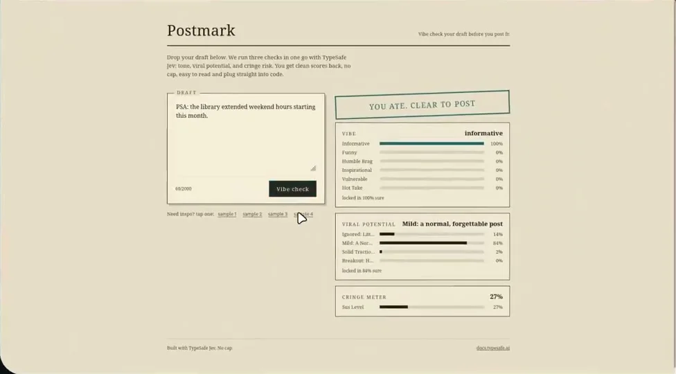

このUIがしていること
投稿という取り消しにくい行動の前に、判断を挟む。ツールは投稿を実行しない。書き直して、もう一度チェックできる。
- 3つの判断を1つの点数にまとめず、枠を分けて並べている。総合表示が「投稿してよい」でも、どの枠が弱いかは個別に読める。
- 最上位のラベルだけでなく、分布の全体を見せる。Mild 84%とIgnored 14%のように、次点との差が分かる。
- 「locked in 84% sure」は、最上位の確率を言い換えた表記に見える。確率とconfidenceを分けて出しているわけではない。
- 総合表示がどの値から決まるかは、画面に出ていない。
キャプチャ
{kind=link}

（原寸の画像を開く）見る箇所左の下書き欄と「Vibe check」、右上の総合表示「YOU ATE. CLEAR TO POST」、VIBE・VIRAL POTENTIAL・CRINGE METERの3つの枠と「locked in … sure」の表記
入力から画面の変化まで
-
判断への入力
投稿前の下書き（最大2000文字）。サンプル文も選べる。画面の説明は「We run three checks in one go with TypeSafe Jev: tone, viral potential, and cringe risk.」。
-
Jevの判断
トーン（Informative、Funny、Humble Brag、Inspirational、Vulnerable、Hot Take）、広がりやすさ（Ignored、Mild、Solid Traction、Breakout）、痛々しさの度合いの3つ。掲載した画面ではInformativeが100%、Mildが84%、Cringeが27%となっている。
-
結果がUIをどう変えるか
枠ごとの分布の棒と、最上位のラベル、「locked in 100% sure」のような確からしさの表記、総合表示。調査時の操作では、Hot Take 100%、Solid Traction 84%、Cringe 60%となった。調査記録は、総合表示が「控える」と「投稿してよい」のどちらかを示すとしている。
- 判断型の見立て
- Choice / Score推定
- トーンと広がりやすさは固定のラベルの分布として、痛々しさは1つの割合として表示されているための見立て。質問型は画面に明記されていない。
Jevとの適合
短い文を、固定のラベルの集合へ、複数の観点で同時に分類するのは、Jevに向く。ただし、判断の対象は主観的な印象であり、実際の反応を予測するものとして扱う根拠はない。書き手が見直すための材料にとどまる。
確認範囲と未確認事項
作者の投稿動画から静止画を確認し、公開サイトが開けることも確かめた。ラベルは主観的で、「広がりやすさ」を客観的な予測として扱う根拠は見つかっていない。校正の検証も見つかっていない。
- 確認済み動画から得た静止画に見える下書き欄、3つの枠のラベルと割合、総合表示、画面の説明文と「Built with TypeSafe Jev」の表記。公開サイトが開けること。調査時の操作の値（Hot Take 100%、Solid Traction 84%、Cringe 60%）は2026-09-21の操作記録による
- 未検証実際の反応との一致、ラベルの校正、総合表示の決め方、同じ下書きでの再現性、ソースコード
- 推定扱い質問型（トーンと広がりやすさをChoice、痛々しさをScoreと見立て）
- 引用動画から必要な範囲の静止画を切り出して引用（ブラウザの枠と周囲のデスクトップを除いた）。権利は作者に帰属する